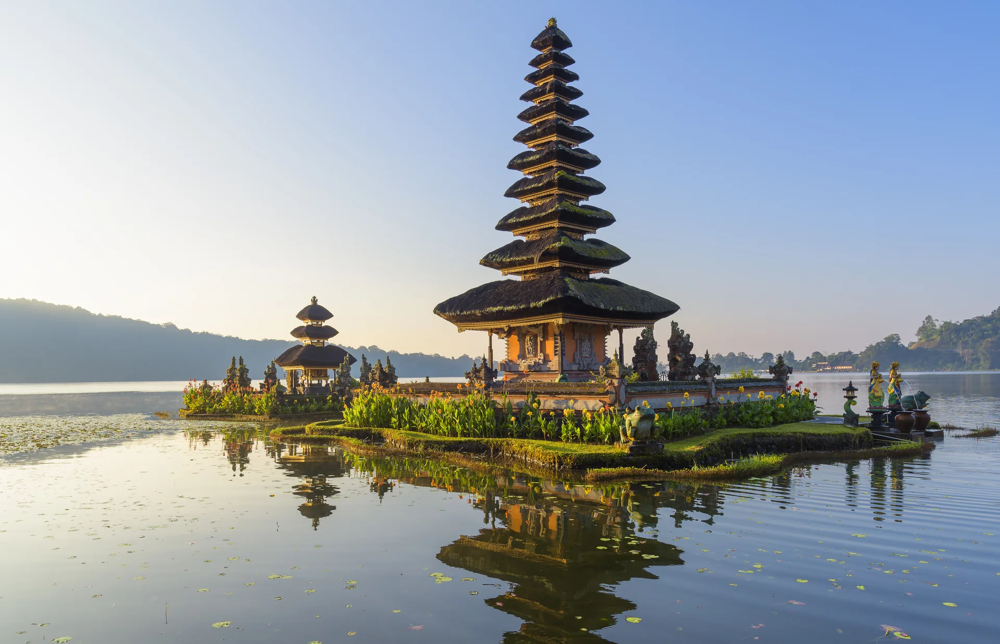
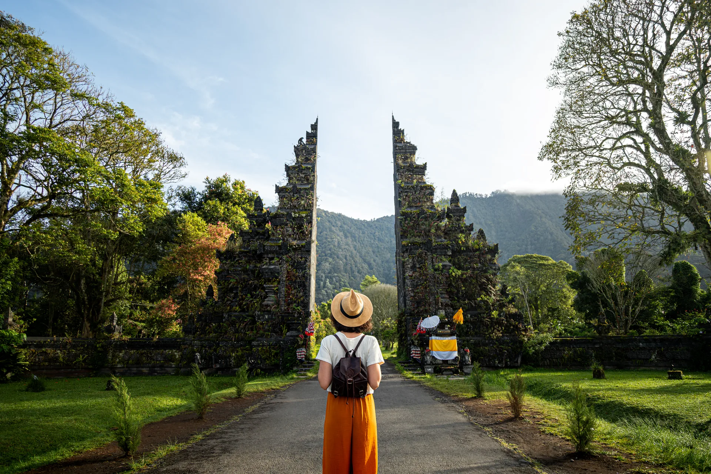
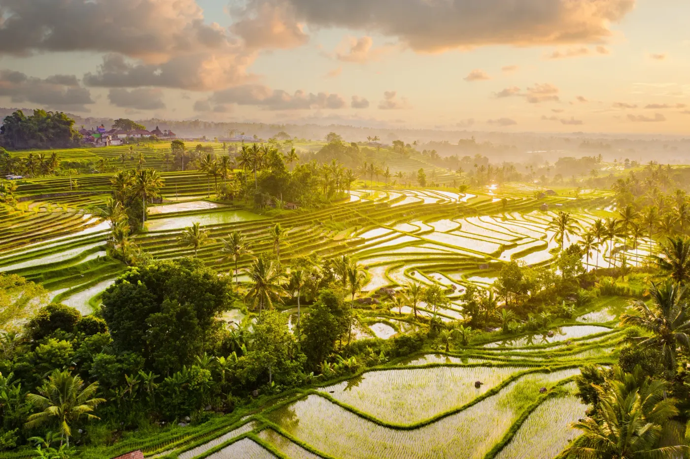
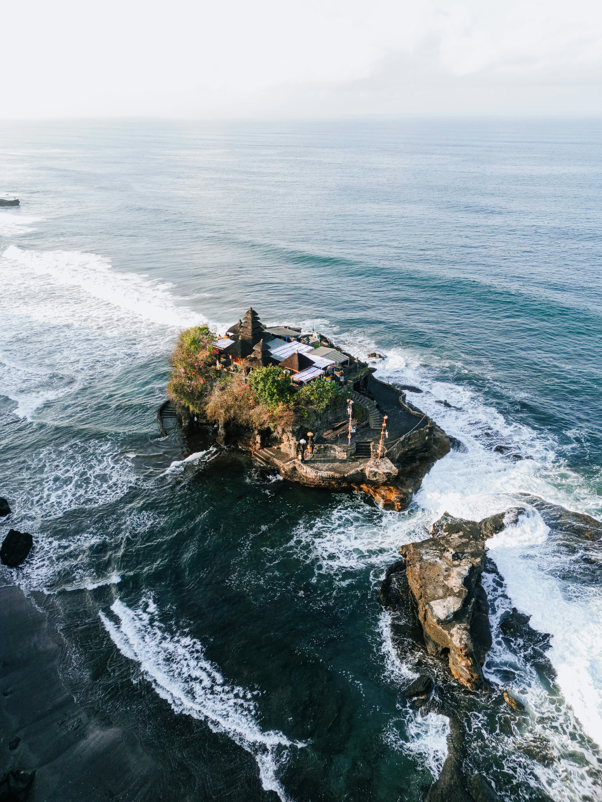

A cool highland loop up to the temple that floats on Lake Beratan, the famous Handara gate, and the UNESCO Jatiluwih rice terraces - ending with the sea breaking around Tanah Lot as the sky turns gold.

The temple that seems to float on Lake Beratan - the one printed on Indonesia's 50,000 rupiah note. Up in the highlands the air is cool and the mist rolls in off the water, which makes for the kind of photo you can't get anywhere else on the island.

The towering Balinese gate framed by jungle-covered mountains - one of the island's most recognisable photo spots. It sits at the entrance of a highland golf resort, and we time it so you get your shot without the long queue.

A UNESCO World Heritage landscape of endless green terraces stretching to the horizon with almost no crowds. Still farmed the traditional subak way, exactly as it has been for a thousand years.

The grand finale - a sea temple perched on a rock offshore, cut off by the tide as the sun drops behind it. We arrive with enough time to walk the cliff path and find a good spot before the light turns. Easily one of the best sunsets in Southeast Asia.